Learn_Pytorch_1
Pytorch学习
学习加载数据集
我们首先需要学会导入数据集。在Pytorch里，负责导入数据集的有两个大类：DataSet 和DataLoader.
DataSet 可以认为是提供一种方式来获取数据和对应的标签
DataLoader为后面的网络提供不同的数据形式（需要dataSet来作为源数据集）
class Dataset(Generic[T_co]):
r"""An abstract class representing a :class:`Dataset`.
All datasets that represent a map from keys to data samples should subclass
it. All subclasses should overwrite :meth:`__getitem__`, supporting fetching a
data sample for a given key. Subclasses could also optionally overwrite
:meth:`__len__`, which is expected to return the size of the dataset by many
:class:`~torch.utils.data.Sampler` implementations and the default options
of :class:`~torch.utils.data.DataLoader`.
.. note::
:class:`~torch.utils.data.DataLoader` by default constructs a index
sampler that yields integral indices. To make it work with a map-style
dataset with non-integral indices/keys, a custom sampler must be provided.
"""
def __getitem__(self, index) -> T_co:
raise NotImplementedError
def __add__(self, other: 'Dataset[T_co]') -> 'ConcatDataset[T_co]':
return ConcatDataset([self, other])
# No `def __len__(self)` default?
# See NOTE [ Lack of Default `__len__` in Python Abstract Base Classes ]
# in pytorch/torch/utils/data/sampler.py
可以看到这是抽象类，需要我们重写DataSet 来运行：
from torch.utils.data import Dataset
from PIL import Image
import os
class Mydata(Dataset):
# 准备一下路径
def __init__(self,rootDir,label_dir):
"""
:param rootDir: the root image source
:param label_dir: whether it is ants or bees
"""
self.rootDir = rootDir
self.label_dir =label_dir
self.path = os.path.join(self.rootDir,self.label_dir)
self.imagePath = os.listdir(self.path)
#获取东西
def __getitem__(self, idx):
img_name = self.imagePath[idx]
img_item_path = os.path.join(self.path,img_name)
img = Image.open(img_item_path)
label = self.label_dir
return img,label
def __len__(self):
return len(self.imagePath)
rootDir = "hymenoptera_data/train"
labelDir = "ants"
ants_dataset = Mydata(rootDir,labelDir)
img,label = ants_dataset[0]
img.show()TensorBoard的基本使用
我们为了使用 tensorBoard可视化，需要在我们自己的源代码文件中引入 SummaryWriter类。
from torch.utils.tensorboard import SummaryWriter 我们就是在这里实现可视化的！
来看看简介怎么说
"""Writes entries directly to event files in the log_dir to be
consumed by TensorBoard.
The `SummaryWriter` class provides a high-level API to create an event file
in a given directory and add summaries and events to it. The class updates the
file contents asynchronously. This allows a training program to call methods
to add data to the file directly from the training loop, without slowing down
training.
""" 简单来讲。就是通过生成event file(事件文件)来预备可视化，在cmd或者是已经被激活的 pytorch环境下来整指令：
tensorboard --logdir=<logFileName> SummaryWriter的构造函数（ init ()）是这样说的：
def __init__(
self, # this 指针一样的东西
log_dir=None,
comment="",
purge_step=None,
max_queue=10,
flush_secs=120,
filename_suffix="",
):
"""Creates a `SummaryWriter` that will write out events and summaries
to the event file.
Args:
log_dir (str): Save directory location. Default is
runs/**CURRENT_DATETIME_HOSTNAME**, which changes after each run.
Use hierarchical folder structure to compare
between runs easily. e.g. pass in 'runs/exp1', 'runs/exp2', etc.
for each new experiment to compare across them.
comment (str): Comment log_dir suffix appended to the default
``log_dir``. If ``log_dir`` is assigned, this argument has no effect.
purge_step (int):
When logging crashes at step :math:`T+X` and restarts at step :math:`T`,
any events whose global_step larger or equal to :math:`T` will be
purged and hidden from TensorBoard.
Note that crashed and resumed experiments should have the same ``log_dir``.
max_queue (int): Size of the queue for pending events and
summaries before one of the 'add' calls forces a flush to disk.
Default is ten items.
flush_secs (int): How often, in seconds, to flush the
pending events and summaries to disk. Default is every two minutes.
filename_suffix (str): Suffix added to all event filenames in
the log_dir directory. More details on filename construction in
tensorboard.summary.writer.event_file_writer.EventFileWriter.
Examples::
from torch.utils.tensorboard import SummaryWriter
# create a summary writer with automatically generated folder name.
writer = SummaryWriter()
# folder location: runs/May04_22-14-54_s-MacBook-Pro.local/
# create a summary writer using the specified folder name.
writer = SummaryWriter("my_experiment")
# folder location: my_experiment
# create a summary writer with comment appended.
writer = SummaryWriter(comment="LR_0.1_BATCH_16")
# folder location: runs/May04_22-14-54_s-MacBook-Pro.localLR_0.1_BATCH_16/
""" 于是，我们实例化一个SummaryWriter,只需要告诉构造函数一个文件夹的名字即可
writer = SummaryWriter("logs")
# 产生一个logs文件夹，其事件文件就在里面！ 向里头输入样本点，比如说函数”y = x”，就需要加入：
for i in range(100):
writer.add_scalar("y = x",i,i) 不要忘记关闭文件流
writer.close()经验来了
首先，如果你打开终端，发现是PS控制台，那就麻烦你手动改成cmd控制台，他在Files - settings - tools - terminal里，选择CMD控制台
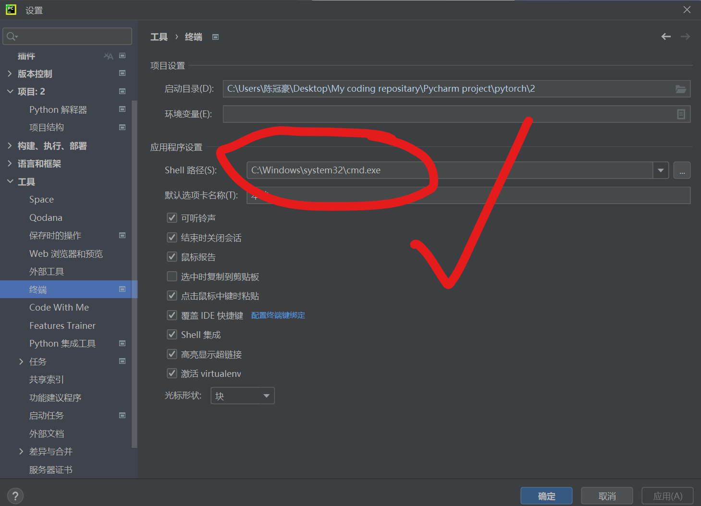
回到终端，他就是这样的了。
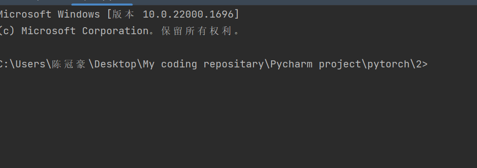
但是，这个时候输入 tensorboard —logdir=logs(你自己看看你指定的文件夹的名字是什么，比如说我的是这个，以及如果你发现你甚至没有log文件夹那就检查代码，去文件的上级找找，但大概率是你代码出错了！)
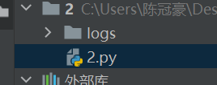
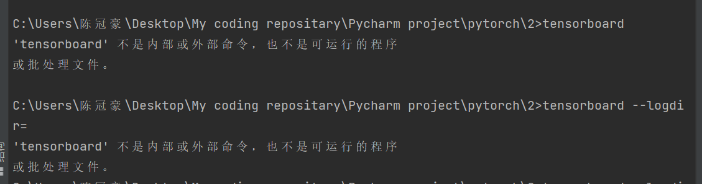
出现了上图的 bug，说明cmd没认识，不知道tensorboard.那就这样，输入
pip install tensorboard -i --trusted-host http://pypi.tuna.tsinghua.edu.cn/simple 这是使用pip 来下载tensorboard, 其中，后面信任域名是为了防止下图种类的报错

但是，即使这样，我还是遇到了另一个奇怪的错误：

这个时候马上换源即可，是源的问题
pip install tensorboard -i https://pypi.douban.com/simple --trusted-host https://pypi.douban.com/simple 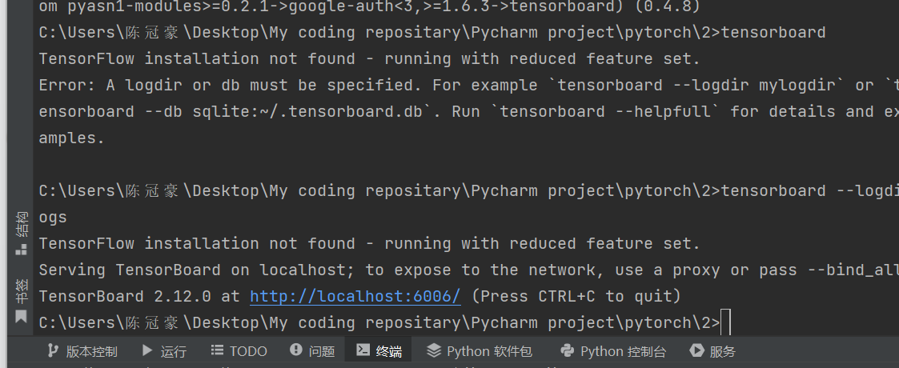
我们再试一次，成功了！
对了。如果发现端口冲突了，可以手动指定端口，就是在指令的后面在塞上一个—port=

下面来看图片的添加！在Pytorch下，我们使用add_image来添加图片
def add_image(
self, tag, img_tensor, global_step=None, walltime=None, dataformats="CHW"
):
"""Add image data to summary.
Note that this requires the ``pillow`` package.
Args:
tag (str): Data identifier
img_tensor (torch.Tensor, numpy.ndarray, or string/blobname): Image data
global_step (int): Global step value to record
walltime (float): Optional override default walltime (time.time())
seconds after epoch of event
dataformats (str): Image data format specification of the form
CHW, HWC, HW, WH, etc.
Shape:
img_tensor: Default is :math:`(3, H, W)`. You can use ``torchvision.utils.make_grid()`` to
convert a batch of tensor into 3xHxW format or call ``add_images`` and let us do the job.
Tensor with :math:`(1, H, W)`, :math:`(H, W)`, :math:`(H, W, 3)` is also suitable as long as
corresponding ``dataformats`` argument is passed, e.g. ``CHW``, ``HWC``, ``HW``.
Examples::
from torch.utils.tensorboard import SummaryWriter
import numpy as np
img = np.zeros((3, 100, 100))
img[0] = np.arange(0, 10000).reshape(100, 100) / 10000
img[1] = 1 - np.arange(0, 10000).reshape(100, 100) / 10000
img_HWC = np.zeros((100, 100, 3))
img_HWC[:, :, 0] = np.arange(0, 10000).reshape(100, 100) / 10000
img_HWC[:, :, 1] = 1 - np.arange(0, 10000).reshape(100, 100) / 10000
writer = SummaryWriter()
writer.add_image('my_image', img, 0)
# If you have non-default dimension setting, set the dataformats argument.
writer.add_image('my_image_HWC', img_HWC, 0, dataformats='HWC')
writer.close()
Expected result:
.. image:: _static/img/tensorboard/add_image.png
:scale: 50 %
"""
torch._C._log_api_usage_once("tensorboard.logging.add_image")
if self._check_caffe2_blob(img_tensor):
from caffe2.python import workspace
img_tensor = workspace.FetchBlob(img_tensor)
self._get_file_writer().add_summary(
image(tag, img_tensor, dataformats=dataformats), global_step, walltime
) 是的，当我们加载图片的时候，函数的参数接受Tensor类型的图片和ndarray类型，这就需要我们调用API来进行转化
from torch.utils.tensorboard import SummaryWriter
from PIL import Image
import numpy as np
writer = SummaryWriter("logs")
imgPath = "hymenoptera_data/train/ants/0013035.jpg"
imgPIL = Image.open(imgPath)
imgArray = np.array(imgPIL) # 转化
writer.add_image("test",imgArray,1,dataformats="HWC") #指明通道是如何的！
writer.close()常见的transformer
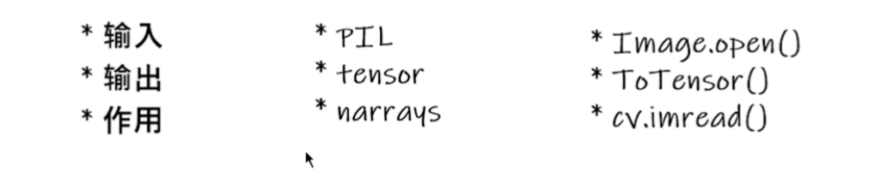
下面我们通过Run Demo的方式来实现记忆常见的transformer！
这是我们要处理的图片：

PIL-Image库读入图片
下面通过PIL的Image库来读取图片文件：
from PIL import Image
img = Image.open("1.png");
print(img);<PIL.PngImagePlugin.PngImageFile image mode=RGBA size=1717x1227 at 0x21AEC1CB880> 这是我们得到的！导入成功！
小插曲： __call__的用法
在Python类里存在内置函数__call__，我们这样的使用它：我们选择新建一个Python文件，
class Person:
def __call__(self, name):
print("__call__ calls for:"+ "hello"+"name")
def hello(self,name):
print("hello"+"name");
person = Person()
person.hello("李四")
person("张三")
书写上面的代码

有点像C++的内置构建函数的感觉，只需要类对象（）后传对应参数就好了。
继续：
看看这个Compose类：
class Compose:
"""Composes several transforms together. This transform does not support torchscript.
Please, see the note below.
Args:
transforms (list of ``Transform`` objects): list of transforms to compose.
Example:
>>> transforms.Compose([
>>> transforms.CenterCrop(10),
>>> transforms.PILToTensor(),
>>> transforms.ConvertImageDtype(torch.float),
>>> ])
.. note::
In order to script the transformations, please use ``torch.nn.Sequential`` as below.
>>> transforms = torch.nn.Sequential(
>>> transforms.CenterCrop(10),
>>> transforms.Normalize((0.485, 0.456, 0.406), (0.229, 0.224, 0.225)),
>>> )
>>> scripted_transforms = torch.jit.script(transforms)
Make sure to use only scriptable transformations, i.e. that work with ``torch.Tensor``, does not require
`lambda` functions or ``PIL.Image``.
"""
def __init__(self, transforms):
if not torch.jit.is_scripting() and not torch.jit.is_tracing():
_log_api_usage_once(self)
self.transforms = transforms
def __call__(self, img):
for t in self.transforms:
img = t(img)
return img
def __repr__(self) -> str:
format_string = self.__class__.__name__ + "("
for t in self.transforms:
format_string += "\n"
format_string += f" {t}"
format_string += "\n)"
return format_string
class ToTensor:
"""Convert a PIL Image or ndarray to tensor and scale the values accordingly.
This transform does not support torchscript.
Converts a PIL Image or numpy.ndarray (H x W x C) in the range
[0, 255] to a torch.FloatTensor of shape (C x H x W) in the range [0.0, 1.0]
if the PIL Image belongs to one of the modes (L, LA, P, I, F, RGB, YCbCr, RGBA, CMYK, 1)
or if the numpy.ndarray has dtype = np.uint8
In the other cases, tensors are returned without scaling.
.. note::
Because the input image is scaled to [0.0, 1.0], this transformation should not be used when
transforming target image masks. See the `references`_ for implementing the transforms for image masks.
.. _references: https://github.com/pytorch/vision/tree/main/references/segmentation
"""
def __init__(self) -> None:
_log_api_usage_once(self)
def __call__(self, pic):
"""
Args:
pic (PIL Image or numpy.ndarray): Image to be converted to tensor.
Returns:
Tensor: Converted image.
"""
return F.to_tensor(pic)
def __repr__(self) -> str:
return f"{self.__class__.__name__}()"
先看后面的ToTensor这个类，其负责把一些PIL Image数据转换为Tensor数据类型，举个例子，就处理我刚刚说的那张图片！
from PIL import Image
from torchvision import transforms
from torch.utils.tensorboard import SummaryWriter
writer = SummaryWriter("logs")
img = Image.open("1.png")
trans = transforms.ToTensor()
img_tensor = trans(img)
writer.add_image("ToTensor",img_tensor)
writer.close()To PILImage
class ToPILImage:
"""Convert a tensor or an ndarray to PIL Image - this does not scale values.
This transform does not support torchscript.
Converts a torch.*Tensor of shape C x H x W or a numpy ndarray of shape
H x W x C to a PIL Image while preserving the value range.
Args:
mode (`PIL.Image mode`_): color space and pixel depth of input data (optional).
If ``mode`` is ``None`` (default) there are some assumptions made about the input data:
- If the input has 4 channels, the ``mode`` is assumed to be ``RGBA``.
- If the input has 3 channels, the ``mode`` is assumed to be ``RGB``.
- If the input has 2 channels, the ``mode`` is assumed to be ``LA``.
- If the input has 1 channel, the ``mode`` is determined by the data type (i.e ``int``, ``float``,
``short``).
.. _PIL.Image mode: https://pillow.readthedocs.io/en/latest/handbook/concepts.html#concept-modes
"""
def __init__(self, mode=None):
_log_api_usage_once(self)
self.mode = mode
def __call__(self, pic):
"""
Args:
pic (Tensor or numpy.ndarray): Image to be converted to PIL Image.
Returns:
PIL Image: Image converted to PIL Image.
"""
return F.to_pil_image(pic, self.mode)
def __repr__(self) -> str:
format_string = self.__class__.__name__ + "("
if self.mode is not None:
format_string += f"mode={self.mode}"
format_string += ")"
return format_string 把其他数据转换成PIL数据类型，不多讲，当成接口就好！
Normalize方法类
class Normalize(torch.nn.Module):
"""Normalize a tensor image with mean and standard deviation.
This transform does not support PIL Image.
Given mean: ``(mean[1],...,mean[n])`` and std: ``(std[1],..,std[n])`` for ``n``
channels, this transform will normalize each channel of the input
``torch.*Tensor`` i.e.,
``output[channel] = (input[channel] - mean[channel]) / std[channel]``
.. note::
This transform acts out of place, i.e., it does not mutate the input tensor.
Args:
mean (sequence): Sequence of means for each channel.
std (sequence): Sequence of standard deviations for each channel.
inplace(bool,optional): Bool to make this operation in-place.
"""
def __init__(self, mean, std, inplace=False):
super().__init__()
_log_api_usage_once(self)
self.mean = mean
self.std = std
self.inplace = inplace
def forward(self, tensor: Tensor) -> Tensor:
"""
Args:
tensor (Tensor): Tensor image to be normalized.
Returns:
Tensor: Normalized Tensor image.
"""
return F.normalize(tensor, self.mean, self.std, self.inplace)
def __repr__(self) -> str:
return f"{self.__class__.__name__}(mean={self.mean}, std={self.std})"
说白了这个就是标准化过程！重要的是这个公式
output[channel] = (input[channel] - mean[channel]) / std[channel]Resize
class Resize(torch.nn.Module):
"""Resize the input image to the given size.
If the image is torch Tensor, it is expected
to have [..., H, W] shape, where ... means an arbitrary number of leading dimensions
.. warning::
The output image might be different depending on its type: when downsampling, the interpolation of PIL images
and tensors is slightly different, because PIL applies antialiasing. This may lead to significant differences
in the performance of a network. Therefore, it is preferable to train and serve a model with the same input
types. See also below the ``antialias`` parameter, which can help making the output of PIL images and tensors
closer.
Args:
size (sequence or int): Desired output size. If size is a sequence like
(h, w), output size will be matched to this. If size is an int,
smaller edge of the image will be matched to this number.
i.e, if height > width, then image will be rescaled to
(size * height / width, size).
.. note::
In torchscript mode size as single int is not supported, use a sequence of length 1: ``[size, ]``.
interpolation (InterpolationMode): Desired interpolation enum defined by
:class:`torchvision.transforms.InterpolationMode`. Default is ``InterpolationMode.BILINEAR``.
If input is Tensor, only ``InterpolationMode.NEAREST``, ``InterpolationMode.NEAREST_EXACT``,
``InterpolationMode.BILINEAR`` and ``InterpolationMode.BICUBIC`` are supported.
The corresponding Pillow integer constants, e.g. ``PIL.Image.BILINEAR`` are accepted as well.
max_size (int, optional): The maximum allowed for the longer edge of
the resized image: if the longer edge of the image is greater
than ``max_size`` after being resized according to ``size``, then
the image is resized again so that the longer edge is equal to
``max_size``. As a result, ``size`` might be overruled, i.e. the
smaller edge may be shorter than ``size``. This is only supported
if ``size`` is an int (or a sequence of length 1 in torchscript
mode).
antialias (bool, optional): Whether to apply antialiasing.
It only affects **tensors** with bilinear or bicubic modes and it is
ignored otherwise: on PIL images, antialiasing is always applied on
bilinear or bicubic modes; on other modes (for PIL images and
tensors), antialiasing makes no sense and this parameter is ignored.
Possible values are:
- ``True``: will apply antialiasing for bilinear or bicubic modes.
Other mode aren't affected. This is probably what you want to use.
- ``False``: will not apply antialiasing for tensors on any mode. PIL
images are still antialiased on bilinear or bicubic modes, because
PIL doesn't support no antialias.
- ``None``: equivalent to ``False`` for tensors and ``True`` for
PIL images. This value exists for legacy reasons and you probably
don't want to use it unless you really know what you are doing.
The current default is ``None`` **but will change to** ``True`` **in
v0.17** for the PIL and Tensor backends to be consistent.
"""
def __init__(self, size, interpolation=InterpolationMode.BILINEAR, max_size=None, antialias="warn"):
super().__init__()
_log_api_usage_once(self)
if not isinstance(size, (int, Sequence)):
raise TypeError(f"Size should be int or sequence. Got {type(size)}")
if isinstance(size, Sequence) and len(size) not in (1, 2):
raise ValueError("If size is a sequence, it should have 1 or 2 values")
self.size = size
self.max_size = max_size
if isinstance(interpolation, int):
interpolation = _interpolation_modes_from_int(interpolation)
self.interpolation = interpolation
self.antialias = antialias
def forward(self, img):
"""
Args:
img (PIL Image or Tensor): Image to be scaled.
Returns:
PIL Image or Tensor: Rescaled image.
"""
return F.resize(img, self.size, self.interpolation, self.max_size, self.antialias)
def __repr__(self) -> str:
detail = f"(size={self.size}, interpolation={self.interpolation.value}, max_size={self.max_size}, antialias={self.antialias})"
return f"{self.__class__.__name__}{detail}"print(img.size)
trans_size = transforms.Resize((520,520))
imgResize = trans_size(img)
print(imgResize) 这样就好了！
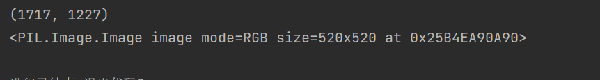
Compose 组合变换
trans_resize_2 = transforms.Resize(512)
trans_compose = transforms.Compose([trans_resize_2, trans])
img_resize_2 = trans_compose(img)
writer.add_image("Composer111", img_resize_2,2)
writer.close() 我们这样把若干变换组合在一起一并完成！
torchvision 学习
pytorch的很多API可以去pytorch.org
下面来看一个加载：
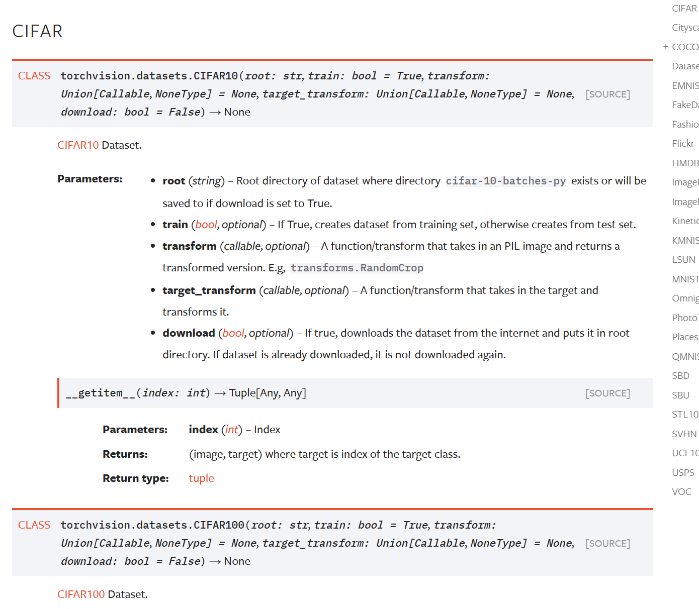
import torchvision
train_set = torchvision.datasets.CIFAR10(root="./dataset",train=True,download=True)
test_set = torchvision.datasets.CIFAR10(root="./dataset",train=False,download=True) 稍等片刻，就会下载好数据！
来测试一下：
print(test_set[0])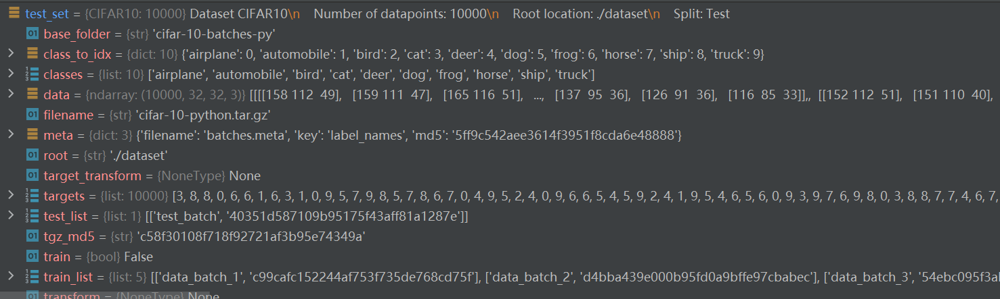
开debug发现还是很多属性的！
这里有相关的read_me:
The CIFAR-10 and CIFAR-100 are labeled subsets of the 80 million tiny images dataset. They were collected by Alex Krizhevsky, Vinod Nair, and Geoffrey Hinton.
The CIFAR-10 dataset
CIFAR-10数据集由10个类别的60000张32x32彩色图像组成，每个类别有6000张图像。有50000个训练图像和10000个测试图像。
数据集分为五个训练批次和一个测试批次，每个批次有10000张图像。测试批次包含从每个类别中随机选择的1000幅图像。训练批包含按随机顺序排列的剩余图像，但一些训练批可能包含来自一个类的图像多于来自另一类的图像。在它们之间，训练批次正好包含每个类的5000个图像。
以下是数据集中的类，以及每个类的10张随机图像：
| airplane |  |
 |
 |
 |
 |
 |
 |
|||
|---|---|---|---|---|---|---|---|---|---|---|
| automobile |  |
 |
 |
 |
 |
 |
||||
| bird |  |
 |
 |
 |
 |
 |
 |
 |
||
| cat |  |
 |
 |
 |
 |
 |
 |
|||
| deer |  |
 |
 |
 |
 |
 |
||||
| dog |  |
 |
 |
 |
 |
 |
 |
|||
| frog |  |
 |
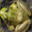 |  |
 |
 |
 |
|||
| horse |  |
 |
 |
 |
 |
 |
||||
| ship |  |
 |
 |
 |
 |
 |
 |
 |
||
| truck |  |
 |
 |
 |
 |
 |
 |
 |
这些类是完全互斥的。汽车和卡车之间没有重叠。“汽车”包括轿车、SUV之类的东西。“卡车”只包括大卡车。两者都不包括皮卡。
下载
如果您要使用此数据集，请引用本页底部的技术报告。
|版本|大小|md5sum|
| —————————————————————————————— | ——— | ———————————————— |
|[CIFAR-10 python版本](http://www.cs.toronto.edu/~kriz/cifar-10-python.tar.gz）|163 MB | c58f30108f718f92721af3b95e74349a|
|[CIFAR-10 Matlab版本](http://www.cs.toronto.edu/~kriz/cifar-10-matlab.tar.gz）|175 MB |70270af85842c9e89bb428ec9976c926|
|[CIFAR-10二进制版本（适用于C程序）](http://www.cs.toronto.edu/~kriz/cifar-10-binary.tar.gz）|162 MB | c32a1d4ab5d03f1284b67883e8d87530|
基线结果
你可以在这个数据集上找到一些基线可复制的结果在cuda convnet的项目页面上. 这些结果是用卷积神经网络获得的。简单地说，在没有数据扩充的情况下，它们的测试误差为18%，在有数据扩充的条件下为11%。此外，Jasper Snoek其中，他使用贝叶斯超参数优化来找到权重衰减和其他超参数的良好设置，这使他能够使用获得18%的网络架构获得15%的测试错误率（没有数据扩充）。
其他结果
罗德里戈·贝南森好心地在他的网站上收集了CIFAR-10/100和其他数据集的结果；点击此处查看。
数据集布局
Python/Matlab版本
我（这里指作者）将描述数据集的Python版本的布局。Matlab版本的布局是相同的。
档案包含文件data_batch_1，data_batch_2。。。，data_batch_5以及test_batch。这些文件中的每一个都是用[cPickle]生成的Python“pickle”对象(http://www.python.org/doc/2.5/lib/module-cPickle.html). 下面是一个python2例程，它将打开这样一个文件并返回一个字典：
def unpickle（文件）：
导入cPickle
打开（文件，'rb'）为fo：
dict=cPickle.load（fo）
返回dict
还有一个蟒蛇3版本：
def unpickle（文件）：
进口泡菜
打开（文件，'rb'）为fo：
dict=pickle.load（fo，编码=“字节”）
返回dict
以这种方式加载的每个批处理文件都包含一个字典，其中包含以下元素：
-数据—一个10000x3072数字uint8s的数组。阵列的每一行存储一个32x32颜色的图像。前1024个条目包含红色通道值，接下来的1024个条目为绿色，最后的1024个为蓝色。图像按行主顺序存储，因此阵列的前32个条目是图像第一行的红色通道值。
-标签—包含0-9范围内的10000个数字的列表。索引i处的数字表示数组数据中第i个图像的标签。
数据集包含另一个名为batches.meta的文件。它也包含一个Python字典对象。它包含以下条目：
-label_names——一个10元素列表，为上述标签数组中的数字标签提供有意义的名称。例如，label_names[0]=“飞机”、label_names[1]=“汽车”等。
二进制版本
二进制版本包含文件data_batch_1.bin、data_batch_2.bin、…、data_back_5.bin以及test_batch.bin。这些文件的格式如下：
<1 x标签><3072 x像素>
...
<1 x标签><3072 x像素>
换句话说，第一个字节是第一个图像的标签，它是0-9范围内的数字。接下来的3072个字节是图像的像素值。第一个1024字节是红色通道值，接下来的1024字节是绿色，最后的1024字节为蓝色。这些值按行主顺序存储，因此前32个字节是图像第一行的红色通道值。
每个文件包含10000个这样的3073字节的图像“行”，尽管没有任何行的分隔符。因此，每个文件的长度应该恰好为30730000字节。
还有另一个文件，名为batches.meta.txt。这是一个ASCII文件，它将0-9范围内的数字标签映射到有意义的类名。它只是10个类名的列表，每行一个。第i行的类名对应于数字标签i。
这个数据集和CIFAR-10一样，只是它有100个类，每个类包含600个图像。每节课有500个训练图像和100个测试图像。CIFAR-100中的100个类被分组为20个超类。每个图像都带有一个“精细”标签（它所属的类）和一个“粗略”标签（其所属的超类）。
以下是CIFAR-100中的类列表：
|超类|类|
| ——————————————— | ——————————————————————————- |
|水生哺乳动物|海狸、海豚、水獭、海豹、鲸鱼|
|鱼类|水族馆鱼类、比目鱼、鳐鱼、鲨鱼、鳟鱼|
|花|兰花、罂粟、玫瑰、向日葵、郁金香|
|食品容器|瓶子、碗、罐头、杯子、盘子|
|水果和蔬菜|苹果、蘑菇、橙子、梨、甜椒|
|家用电器|时钟、电脑键盘、灯、电话、电视|
|家用家具|床、椅子、沙发、桌子、衣柜|
|昆虫|蜜蜂、甲虫、蝴蝶、毛毛虫、蟑螂|
|大型食肉动物|熊、豹、狮子、老虎、狼|
|大型人造户外物品|桥梁、城堡、房屋、道路、摩天大楼|
|大型自然户外场景|云、森林、山脉、平原、海洋|
|大型杂食动物和草食动物|骆驼、牛、黑猩猩、大象、袋鼠|
|中型哺乳动物|狐狸、豪猪、负鼠、浣熊、臭鼬|
|非昆虫无脊椎动物|螃蟹、龙虾、蜗牛、蜘蛛、蠕虫|
|人|婴儿，男孩，女孩，男人，女人|
|爬行动物|鳄鱼、恐龙、蜥蜴、蛇、乌龟|
|小型哺乳动物|仓鼠、老鼠、兔子、鼩鼩、松鼠|
|树木|枫树、橡树、棕榈树、松树、柳树|
|车辆1|自行车、公共汽车、摩托车、皮卡、火车|
|车辆2|割草机、火箭、有轨电车、坦克、拖拉机|
是的，我知道蘑菇不是真正的水果或蔬菜，熊也不是真正的食肉动物。
下载
|版本|大小|md5sum|
| —————————————————————————————— | ——— | ———————————————— |
|[CIFAR-100 python版本](http://www.cs.toronto.edu/~kriz/cifar-100-python.tar.gz）|161 MB | eb9058c3a382ffc7106e4002c42a8d85|
|[CIFAR-100 Matlab版本](http://www.cs.toronto.edu/~kriz/cifar-100-matlab.tar.gz）|175 MB |6a4bfa1dcd5c9453dda6bb54194911f4|
|[CIFAR-100二进制版本（适用于C程序）](http://www.cs.toronto.edu/~kriz/cifar-100-二进制.tar.gz）|161 MB |03b5dce0913d631647c71ecec9e9cb8|
数据集布局
python/Matlab版本
python和Matlab版本在布局上与CIFAR-10相同，所以我不会在这里浪费空间来描述它们。
二进制版本
CIFAR-100的二进制版本与CIFAR-10的二进制版本一样，只是每个图像都有两个标签字节（粗略和精细）和3072个像素字节，所以二进制文件看起来是这样的：
<1 x粗略标签><1 x精细标签><3072 x像素>
...
<1 x粗略标签><1 x精细标签><3072 x像素>
Sivan Sabato好心地提供了[这份文件](http://www.cs.toronto.edu/~kriz/cifar_indexes），它将cifar-100图像映射到8000万微小图像数据集中的图像。Sivan写道：
该文件有60000行，每行都包含一个指向微小数据库的索引，
其中微小数据库中的第一个图像被索引为“1”。“0”表示不是来自微小数据库的图像。
前50000行对应于训练集，后10000行对应
到测试集。
参考
本技术报告（第3章）更详细地描述了数据集以及收集数据时所遵循的方法。如果您打算使用此数据集，请引用它。
DataLoader
dataLoader意如其名，就是（从dataset）加载数据集
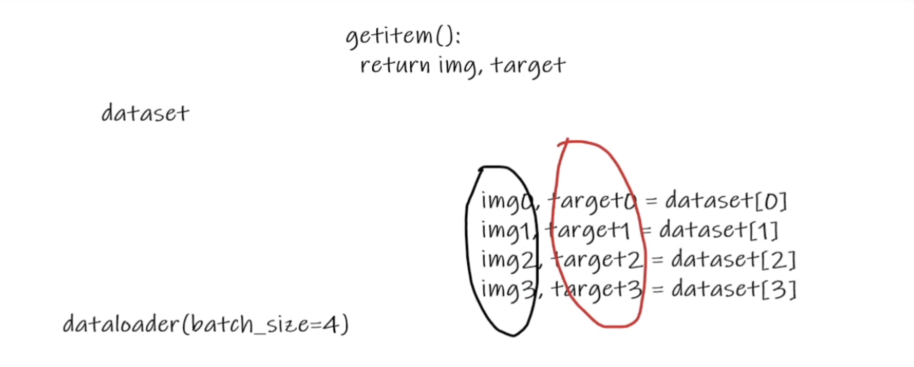
import torchvision
from torch.utils.data import DataLoader
# 测试集
test_data = torchvision.datasets.CIFAR10("./dataset",train=False,transform=torchvision.transforms.ToTensor(),download=True)
test_loader = DataLoader(dataset=test_data,batch_size=4,shuffle=True,num_workers=0,drop_last=False)
# 第一张样本
img,target = test_data[0]
print(img.shape)
print(target)
# 可以看看样本
for data in test_loader:
imgs,targets =data
print(imgs.shape)
print(targets) 可以使用SummaryWriter 来展示之：
import torchvision
from torch.utils.data import DataLoader
from torch.utils.tensorboard import SummaryWriter
# 测试集
test_data = torchvision.datasets.CIFAR10("./dataset",train=False,transform=torchvision.transforms.ToTensor(),download=True)
test_loader = DataLoader(dataset=test_data,batch_size=4,shuffle=True,num_workers=0,drop_last=False)
# 第一张样本
img,target = test_data[0]
print(img.shape)
print(target)
step = 0
writer = SummaryWriter("dataLoader")
for data in test_loader:
imgs,targets =data
# print(imgs.shape)
# print(targets)
writer.add_images("test_data",imgs,step)
step = step + 1
writer.close()
tensorboard logdir="dataLoader"
神经网络
卷积层
先扔一个pytorch的官网！https://pytorch.org/docs
继续：
这是参数：作为图像处理常用的是Conv2d
nn.Conv1d |
Applies a 1D convolution over an input signal composed of several input planes. |
|---|---|
nn.Conv2d |
Applies a 2D convolution over an input signal composed of several input planes. |
nn.Conv3d |
Applies a 3D convolution over an input signal composed of several input planes. |
nn.ConvTranspose1d |
Applies a 1D transposed convolution operator over an input image composed of several input planes. |
nn.ConvTranspose2d |
Applies a 2D transposed convolution operator over an input image composed of several input planes. |
nn.ConvTranspose3d |
Applies a 3D transposed convolution operator over an input image composed of several input planes. |
nn.LazyConv1d |
A torch.nn.Conv1d module with lazy initialization of the in_channels argument of the Conv1d that is inferred from the input.size(1). |
nn.LazyConv2d |
A torch.nn.Conv2d module with lazy initialization of the in_channels argument of the Conv2d that is inferred from the input.size(1). |
nn.LazyConv3d |
A torch.nn.Conv3d module with lazy initialization of the in_channels argument of the Conv3d that is inferred from the input.size(1). |
nn.LazyConvTranspose1d |
A torch.nn.ConvTranspose1d module with lazy initialization of the in_channels argument of the ConvTranspose1d that is inferred from the input.size(1). |
nn.LazyConvTranspose2d |
A torch.nn.ConvTranspose2d module with lazy initialization of the in_channels argument of the ConvTranspose2d that is inferred from the input.size(1). |
nn.LazyConvTranspose3d |
A torch.nn.ConvTranspose3d module with lazy initialization of the in_channels argument of the ConvTranspose3d that is inferred from the input.size(1). |
nn.Unfold |
Extracts sliding local blocks from a batched input tensor. |
nn.Fold |
Combines an array of sliding local blocks into a large containing tensor. |
点进去看看：
CLASS
torch.nn.Conv2d(in_channels, out_channels, kernel_size, stride=1, padding=0, dilation=1, groups=1, bias=True, padding_mode='zeros', device=None, dtype=None) Applies a 2D convolution over an input signal composed of several input planes.
In the simplest case, the output value of the layer with input size
and output
can be precisely described as:
where ⋆ is the valid 2D cross-correlation operator, N is a batch size, C denotes a number of channels, H is a height of input planes in pixels, and W* is width in pixels.
This module supports TensorFloat32.
On certain ROCm devices, when using float16 inputs this module will use different precision for backward.
stridecontrols the stride for the cross-correlation, a single number or a tuple.paddingcontrols the amount of padding applied to the input. It can be either a string {‘valid’, ‘same’} or an int / a tuple of ints giving the amount of implicit padding applied on both sides.dilationcontrols the spacing between the kernel points; also known as the à trous algorithm. It is harder to describe, but this link has a nice visualization of whatdilationdoes.groupscontrols the connections between inputs and outputs.in_channelsandout_channelsmust both be divisible bygroups. For example,- At groups=1, all inputs are convolved to all outputs.
- At groups=2, the operation becomes equivalent to having two conv layers side by side, each seeing half the input channels and producing half the output channels, and both subsequently concatenated.
- At groups=
in_channels, each input channel is convolved with its own set of filters (of size $\frac{in_channels}{out_channels}$)
The parameters kernel_size, stride, padding, dilation can either be:
- a single
int– in which case the same value is used for the height and width dimension- a
tupleof two ints – in which case, the first int is used for the height dimension, and the second int for the width dimension
When groups == in_channels and out_channels == K * in_channels, where K is a positive integer, this operation is also known as a “depthwise convolution”.
In other words, for an input of size $(N,C_{in},L_{in})$, a depthwise convolution with a depthwise multiplierK can be performed with the arguments ($C_{in}=C_{in},C_{out}=C_{in}×K,…,groups=C_{in}$.)
In some circumstances when given tensors on a CUDA device and using CuDNN, this operator may select a nondeterministic algorithm to increase performance. If this is undesirable, you can try to make the operation deterministic (potentially at a performance cost) by setting
torch.backends.cudnn.deterministic = True. See Reproducibility for more information.
padding='valid' is the same as no padding. padding='same' pads the input so the output has the shape as the input. However, this mode doesn’t support any stride values other than 1.
This module supports complex data types i.e. complex32, complex64, complex128.
Parameters:
- in_channels (int) – Number of channels in the input image
- out_channels (int) – Number of channels produced by the convolution
- kernel_size (int or tuple) – Size of the convolving kernel
- stride (int or tuple, optional) – Stride of the convolution. Default: 1
- padding (int, tuple or str, optional) – Padding added to all four sides of the input. Default: 0
- padding_mode (str, optional) –
'zeros','reflect','replicate'or'circular'. Default:'zeros' - dilation (int or tuple, optional) – Spacing between kernel elements. Default: 1
- groups (int, optional) – Number of blocked connections from input channels to output channels. Default: 1
- bias (bool, optional) – If
True, adds a learnable bias to the output. Default:True
what is Convolution arithmetic(from read ME)
A technical report on convolution arithmetic in the context of deep learning.
The code and the images of this tutorial are free to use as regulated by the
licence and subject to proper attribution:
- [1] Vincent Dumoulin, Francesco Visin - A guide to convolution arithmetic
for deep learning
(BibTeX)
Convolution animations
_N.B.: Blue maps are inputs, and cyan maps are outputs._
 |
 |
 |
 |
| No padding, no strides | Arbitrary padding, no strides | Half padding, no strides | Full padding, no strides |
 |
 |
 |
|
| No padding, strides | Padding, strides | Padding, strides (odd) |
Transposed convolution animations
_N.B.: Blue maps are inputs, and cyan maps are outputs._
| No padding, no strides, transposed | Arbitrary padding, no strides, transposed | Half padding, no strides, transposed | Full padding, no strides, transposed |
| No padding, strides, transposed | Padding, strides, transposed | Padding, strides, transposed (odd) |
Dilated convolution animations
_N.B.: Blue maps are inputs, and cyan maps are outputs._
 |
| No padding, no stride, dilation |
Generating the Makefile
From the repository’s root directory:
$ ./bin/generate_makefileGenerating the animations
From the repository’s root directory:
$ make all_animationsThe animations will be output to the gif directory. Individual animation steps
will be output in PDF format to the pdf directory and in PNG format to thepng directory.
Compiling the document
From the repository’s root directory:
$ make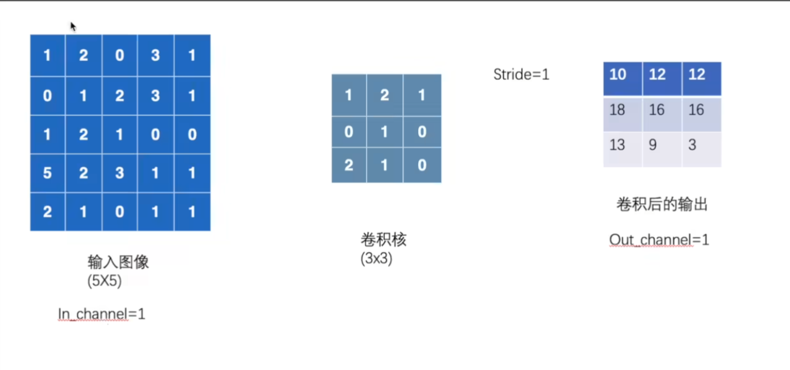
其实就是这样，我们3 x 3的扫过图像，并且对之求和输出到新单元，我们发现他会做九次。，故得到了一个 3 x 3的表。
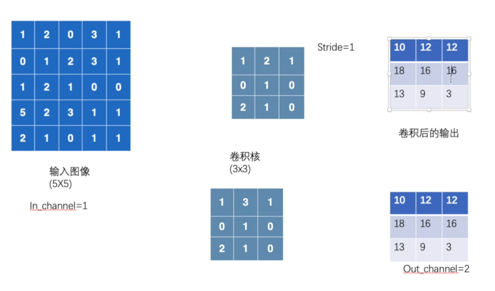
这样就可以升维了，从而提取信息特征。
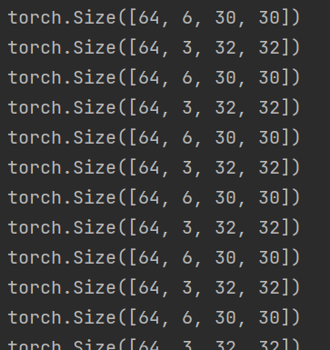
import torch
import torchvision
from torch import nn
from torch.nn import Conv2d
from torch.utils.data import DataLoader
dataset = torchvision.datasets.CIFAR10("../data",train = False,
transform=torchvision.transforms.ToTensor(),
download=True
)
dataloader = DataLoader(dataset,batch_size=64)
class cc(nn.Module):
def __init__(self):
super(cc,self).__init__()
self.conv1 = Conv2d(in_channels=3,out_channels=6,kernel_size=3,stride=1,padding=0)
def forward(self,x):
x = self.conv1(x)
return x
c = cc()
for data in dataloader:
imgs, targets =data
output = c(imgs)
print(imgs.shape)
print(output.shape) 我们把它输出到tensorboard里去：
import torch
import torchvision
from torch import nn
from torch.nn import Conv2d
from torch.utils.data import DataLoader
from torch.utils.tensorboard import SummaryWriter
dataset = torchvision.datasets.CIFAR10("../data",train = False,
transform=torchvision.transforms.ToTensor(),
download=True
)
dataloader = DataLoader(dataset,batch_size=64)
class cc(nn.Module):
def __init__(self):
super(cc,self).__init__()
self.conv1 = Conv2d(in_channels=3,out_channels=6,kernel_size=3,stride=1,padding=0)
def forward(self,x):
x = self.conv1(x)
return x
c = cc()
writer = SummaryWriter("../logs")
step = 0
for data in dataloader:
imgs, targets =data
output = c(imgs)
print(imgs.shape)
print(output.shape)
output = torch.reshape(output, (-1, 3, 30, 30))
writer.add_images("input",imgs,step)
writer.add_images("output", output, step)
step = step + 1(yolofacev5) pythonProject1> cd ..
(yolofacev5) pythonProject1> tensorboard --logdir=logs 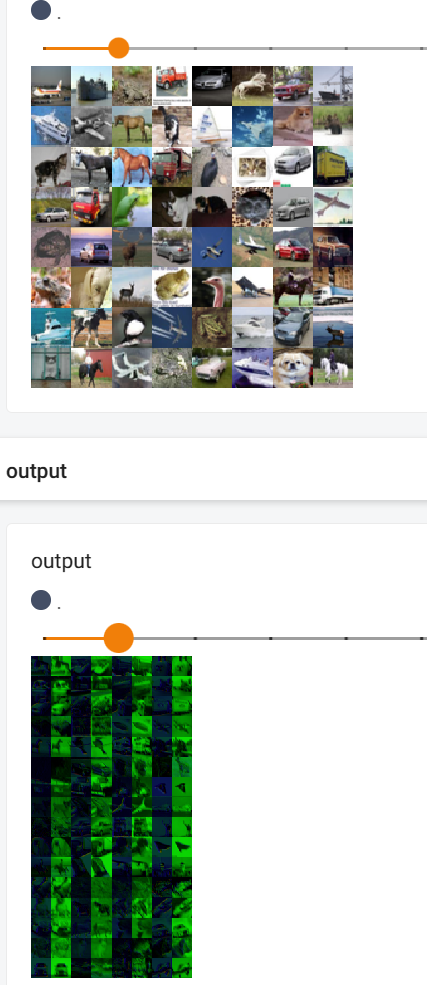